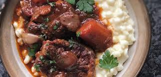

🍽️ 4 Servings ⏲️Prep:+-3 hours
Step 1: Place the samp into a bowl, then pour over the boiling water and leave to stand and soak for 30 minutes. You can also soak the samp for 24 hours, using cold water.
Step 2: Rinse the soaked samp, then place into a pot. Add the bay leaves, salt and cover with cold water.
Step 3: Bring to the boil, then turn down to a simmer and cook for 1 hour, checking halfway through to top up the water if necessary.
Step 4: Dust oxtail in flour, salt and pepper.
Step 5: Heat oil in a pot, and then brown the oxtail in batches before removing from the pan and setting aside.
Step 6: To the same pot, add onions, carrots, bay leaf and thyme then sauté until vegetables begin to soften and brown.
Step 7: Add tomato paste and curry powder, then cook for a minute.
Step 8: Add tomatoes (tinned/fresh), sugar, wine (optional) and stock then bring to a simmer.
Step 9: Return oxtail to the pot, then cover with a lid and simmer gently for 2 ½ hours or until the meat is tender.
Step 10: Give the samp a stir, the kernels will be softer, but not quite cooked through and the starch will have come out of the samp and thickened the mixture. Add more water to cover, then simmer for another 30 minutes.
Step 11: Check if the samp is cooked through by tasting a few kernels (if they are tender, then its ready) or mash a few kernels with a fork, if they mash easily then the samp is cooked through.
Step 12: Add the cream and season generously with salt then simmer for 5 minutes.